Grade 2
Year 2
Workbook
Index
Week 1-2: Water
Week 3, 4 &5: Our country South Africa
Week 6-7: Communication in our world
Week 8-9: Life at night
Theme: water
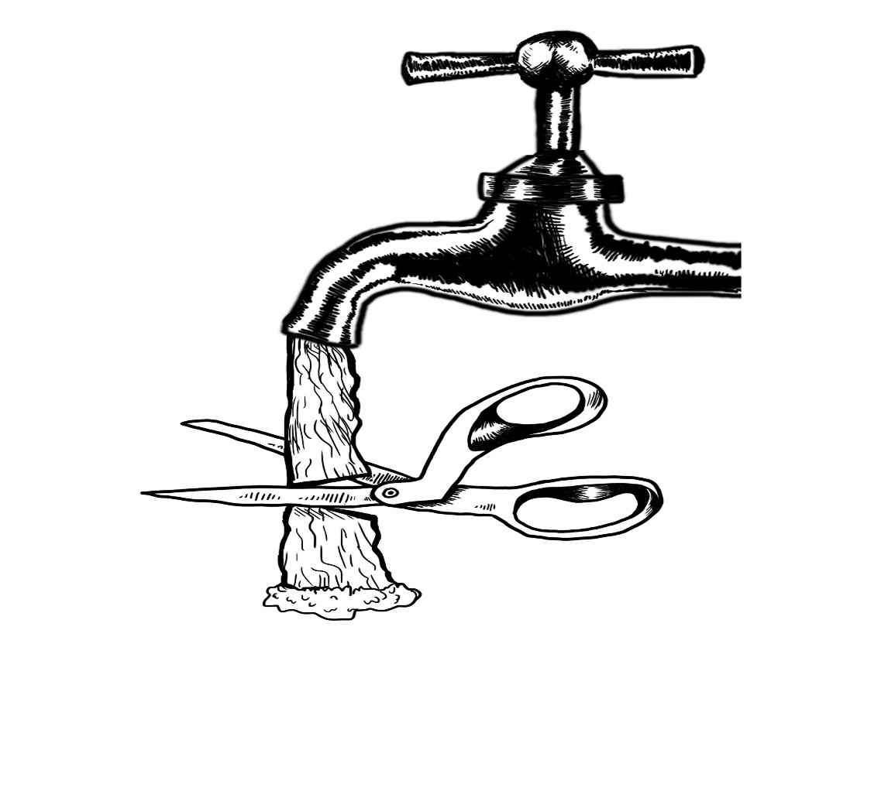
Introduction
Group 1

Colour the water bottle using pencil colours
Practical task
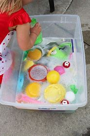
Colour in the picture below

Group 2
Water cycle
Colour in the water cycle

Fill in the water cyle using the following words
condensation | precipitation | Collection | Exploration |

Colour the picture below
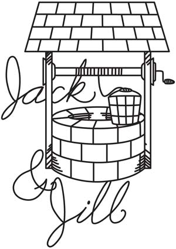
Group 3
Answer the following questions given in the worksheet on water and its uses:
- Why do we not drink sea water?
______________________________________________________________________________________________________________________________
- Name three things for which you use water.
______________________________________________________________________________________________________________________________
- How can we kill germs in our drinking water?
______________________________________________________________________________________________________________________________
- What is one way in which people pollute water?
______________________________________________________________________________________________________________________________
- Name the three forms of water.
______________________________________________________________________________________________________________________________
Fill in the blanks using the words below
thirsty | fire | electricity | water | bath |
water | needs | Food | water | Baoting |
1. Water is also one of basic ________.
2. Plants need water to prepare their ________.
3. We do ________ in water.
4. Animals take a _____________ in the water of rivers, ponds or lakes.
5. we use __________for cooking and washing
6. You drink water when you are ___________.
7. Water is needed for putting-off ___________.
8. Plants need ___________ for germination.
9. You should not waste ____________.
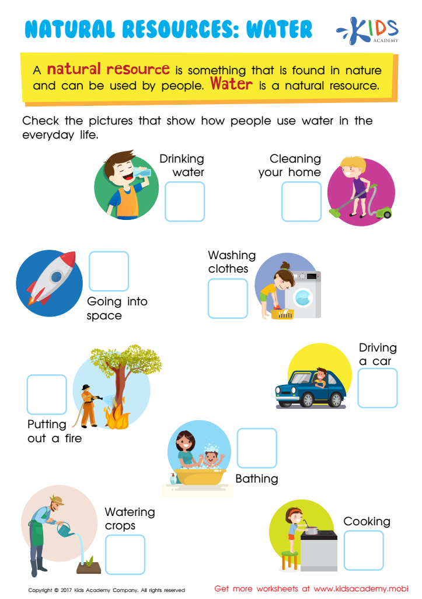
What are the 3 ways you can save water?

Theme

Group 1

Colour the South African flag using; black, red, yellow, green, blue and white

Point out 9 South African provinces
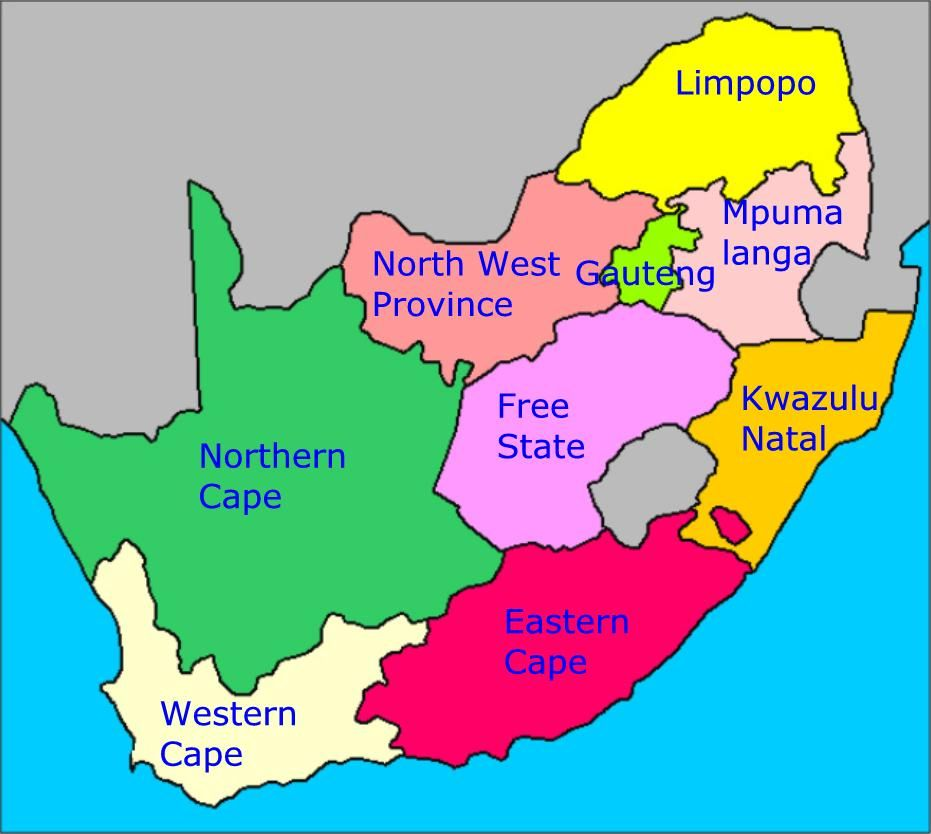
Sing the national anthem
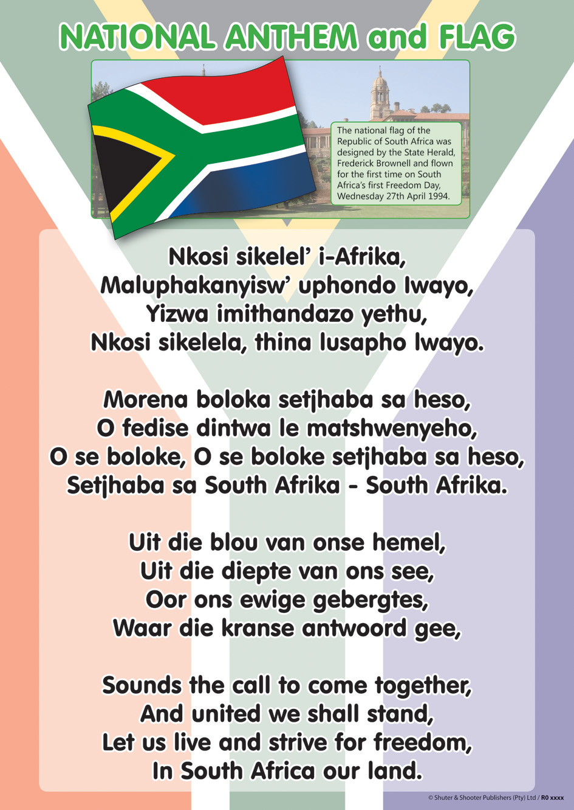
Group 2

Colour the South African flag using; black, red, yellow, green, blue and white

Colour 9 South African provinces
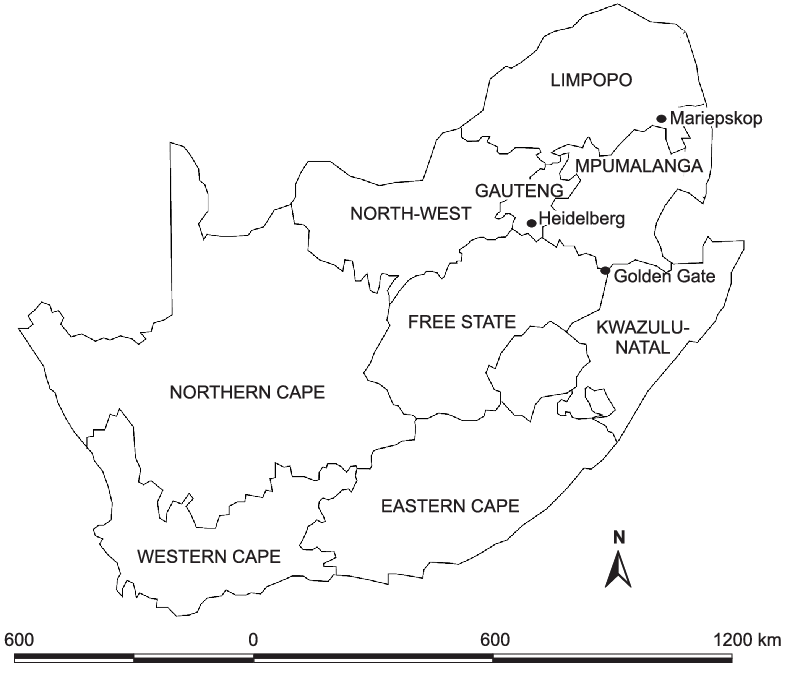
Colour in the national springbok
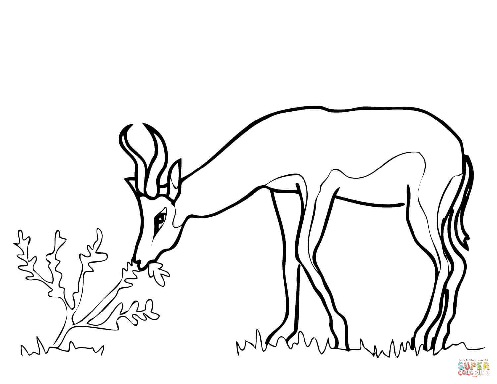
Group 3

Colour the South African flag using; black, red, yellow, green, blue and white

Colour in the protea national flower using different colours.
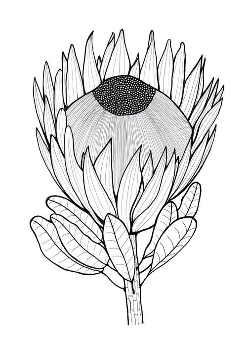
Practical work
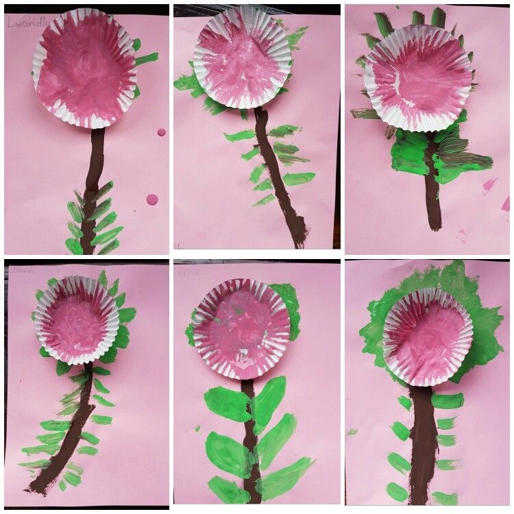
South african Map
Complete and colour the map
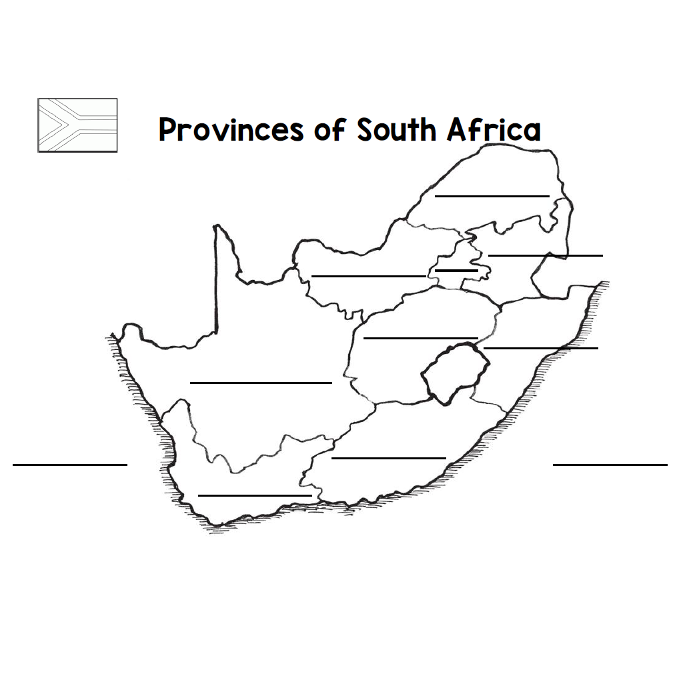
Theme
Communication in our world
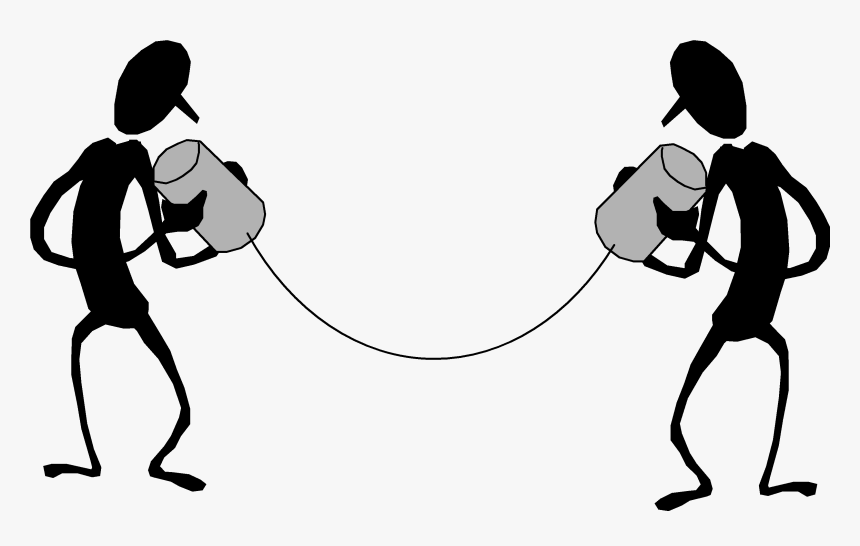
Introduction What is communication?


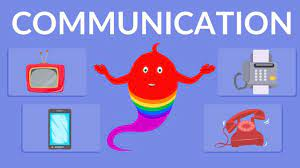
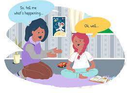
Group 1

Colour in the telephone picture
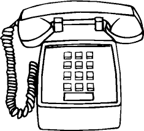
Colour in the picture below
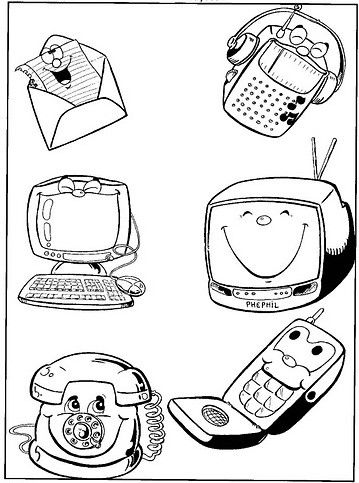
Group 2
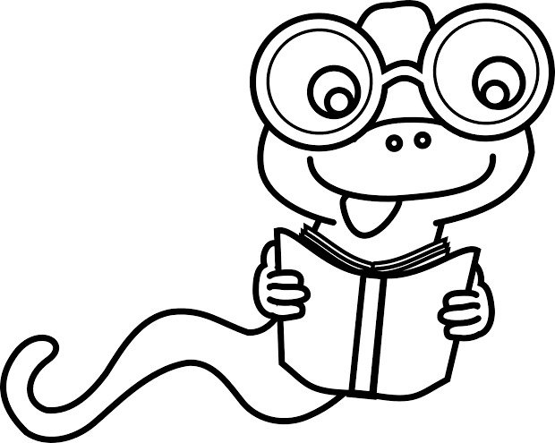
Tick the correct form of communication tgat is used now

Colour in the correct forms of communication

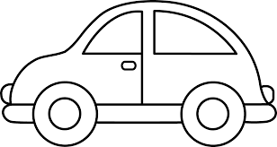
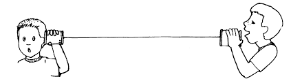
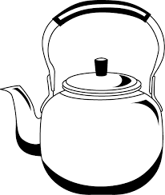
Colour in the mail communication picture below
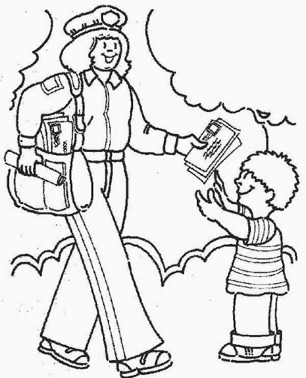
Group 3
Draw any technology gadget that is used for communication
Colour in the picture of verbal communication
Circle the object that we use to communicate

Draw lines to connect the pictures and matching communication tools
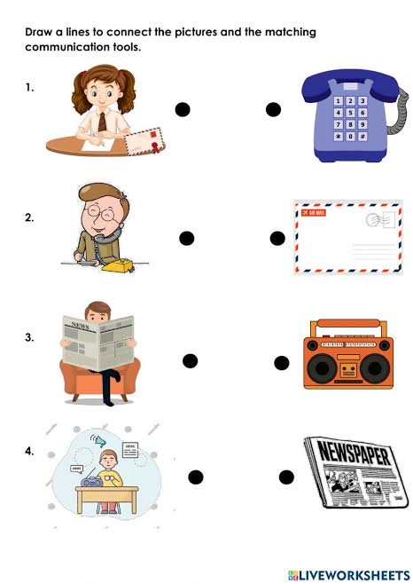
Theme
Life at night
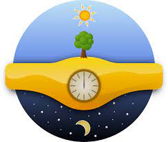
Group 1
Colour in the moon below

Colour in the star picture below
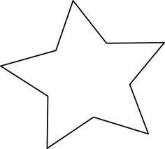
Group 2

Colour in the moon picture below
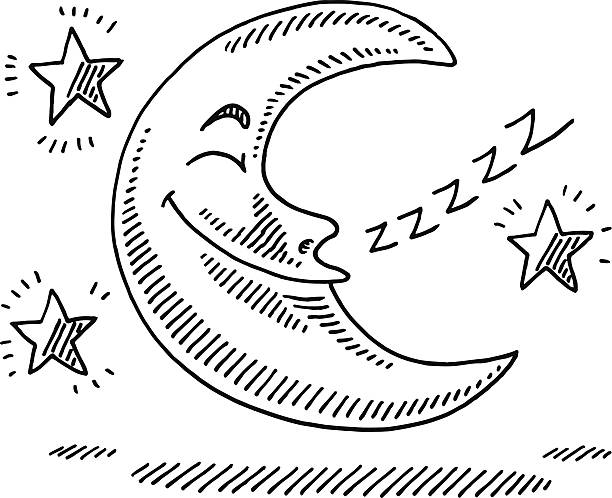
Trace and colour in the moon picture below

Tick the correct box of what we see at night and during the day
day night
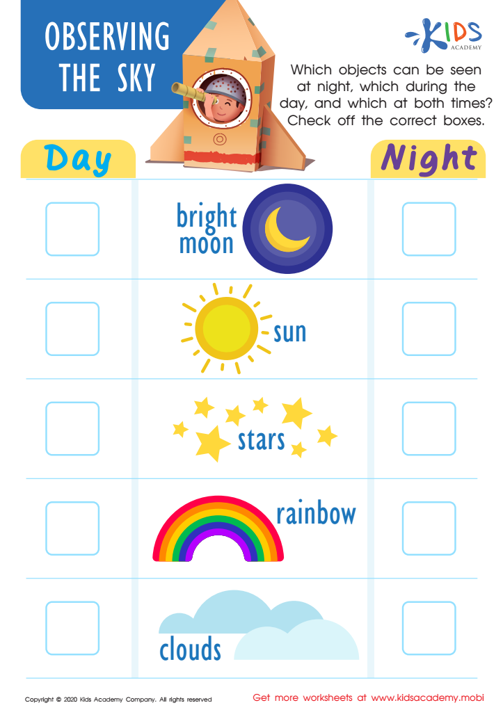
Group 3

Draw and colour in any image that represents the night
Colour the images that represent night life


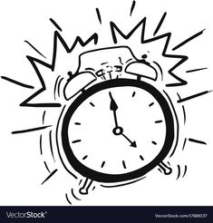

Tick the correct picture of night time

Reference list